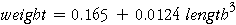

Variability in the Least Squares Coefficients
The equation

is a reasonable summary of the relationship between slug weight and length. But if a different 100 slugs had been collected, the coefficients of the least squares equation would have been different.
The diagram below shows similar data that might have been recorded.
Click Take sample a few times to see the variability in the least squares coefficients.
Estimating the Relationship for Slugs in General
The results from a single sample of 100 slugs provide a reasonable description of the relationship between slug weight and length in the wider population of 'slugs in general'. However we have seen above that the coefficients we obtain from a single sample are variable, so the least squares equation obtained is unlikely to be identical to the best description for slugs in general.
We should therefore give an indication of the accuracy of the least squares coefficients (as estimates of the corresponding value for slugs in general) using confidence intervals.